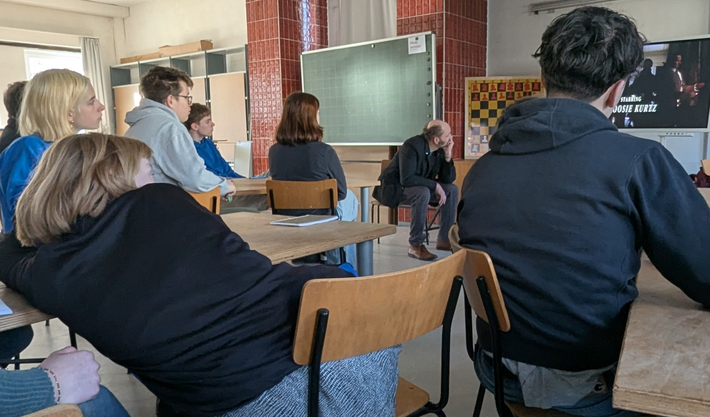
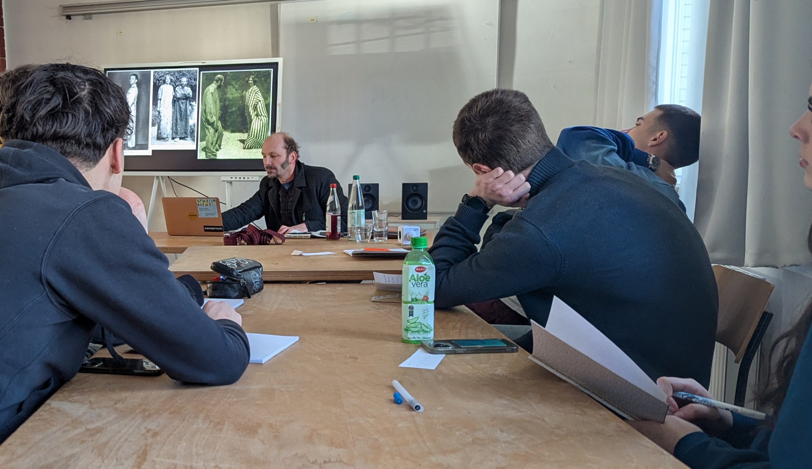
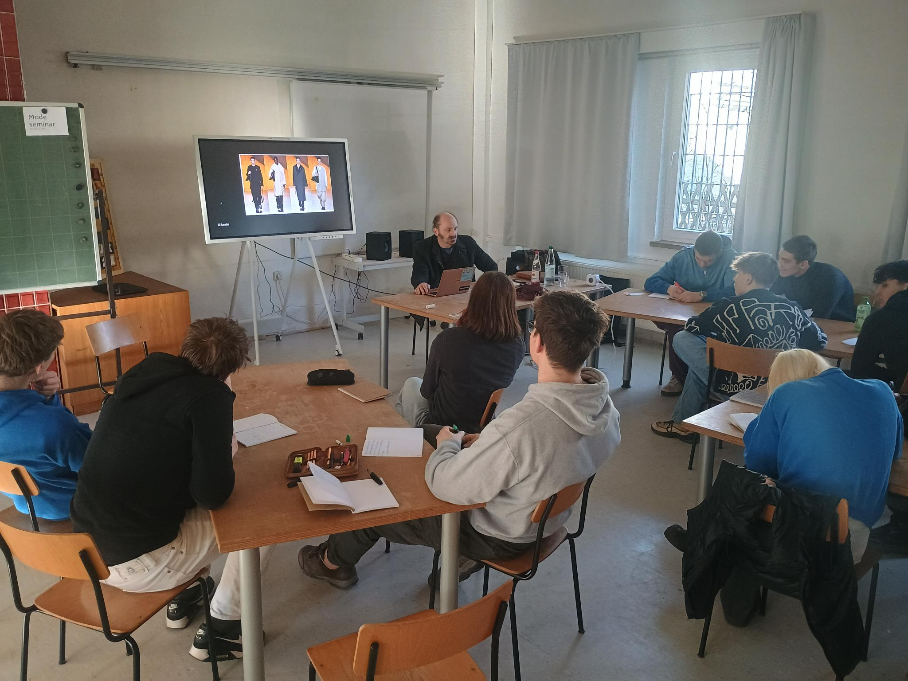

Modeseminar
Konzept
Einblicke in die Geschichte der Mode: Ein Vortrag von Simon Frisch
Im Rahmen des HKE-Unterrichts hatte die 11. Klasse die Gelegenheit, an einem spannenden Vortrag zum Thema „Geschichte der Mode – Was sagt Kleidung über uns aus?“ teilzunehmen, der von Simon Frisch an der Universität gehalten wurde. Der Vortrag bot einen faszinierenden Überblick über die Entwicklung der Mode vom 17. bis zum 20. Jahrhundert und regte zum Nachdenken über die Bedeutung von Kleidung in unserer Gesellschaft an. Simon Frisch begann mit der Mode des 18. Jahrhunderts, in dem die Menschen sich mit aufwendigen Kleidungsstücken aus zahlreichen Stoffen und Fellen kleideten. Diese Zeit war geprägt von Pracht und Überfluss, was den sozialen Status der Träger deutlich zur Schau stellte.
Im Gegensatz dazu zeigte der Vortrag, dass im 19. Jahrhundert die Mode sich in eine eher schlichte Richtung entwickelte. Anzüge und unauffällige Kleider wurden zum Standard, was einen Wandel in den gesellschaftlichen Werten widerspiegelte. Ein weiterer interessanter Punkt war die Entwicklung der praktischen Reformkleidung, die am Ende des 19. Jahrhunderts und zu Beginn des 20. Jahrhunderts an Bedeutung gewann. Diese Bewegung legte den Fokus auf Funktionalität und Bequemlichkeit, was den Bedürfnissen des modernen Lebens Rechnung trug. Gegen Ende des 20. Jahrhunderts erlebte die Mode jedoch einen weiteren Wandel: Die Menschen begannen, sich in Gruppen zu kleiden und ihre Identität durch Kleidung auszudrücken. Subkulturen wie Rocker, Skater und Mods entstanden, die durch ihren individuellen Stil und ihre Gruppenzugehörigkeit auffielen.
Der Vortrag regte uns dazu an, über die Rolle von Kleidung in unserem eigenen Leben nachzudenken. Was sagt unser persönlicher Stil über uns aus? Wie beeinflusst Mode unsere Identität und unser Zugehörigkeitsgefühl? Diese Fragen werden uns sicherlich noch lange begleiten. Wir danken Simon Frisch für diesen aufschlussreichen Vortrag und freuen uns auf weitere inspirierende Veranstaltungen! Eure 11. Klasse
Umsetzung
  Beteiligte
- 11. Klasse